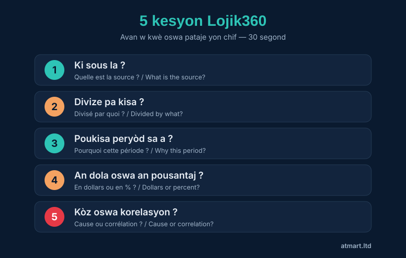

🧠 Lespri kritik
Entwodiksyon
Sa w pral aprann : nan fen leson sa a, w ap konnen kòman pou w defann tèt ou kont fo enfòmasyon, chif ki twonpe ak agiman manipilatè — kit se nan yon mesaj WhatsApp, yon diskou politik, yon reklam oswa menm yon repons entèlijans atifisyèl.
Lespri kritik se pa yon kado kèk moun entelijan sèlman genyen. Se yon konpetans — menm jan ak kondi machin oswa fè manje — ki aprann ak yon metòd ak antrènman. Epi se konpetans ki pi enpòtan nan 21yèm syèk la : chak jou nou resevwa plis enfòmasyon pase sa granparan nou yo te resevwa nan yon mwa, epi yon gwo pati ladan l fo, egzajere oswa fèt espre pou manipile nou.
Kisa lespri kritik ye ?
Lespri kritik, se abitid pou w pa aksepte yon afimasyon senpleman paske yo prezante l ba nou — men pou w egzamine l anvan w kwè l. « Kritik » pa vle di « negatif » : li soti nan grèk kritikos, ki vle di « kapab jije, kapab distenge ».
Yon moun ki panse ak lespri kritik poze tèt li twa kesyon debaz devan nenpòt enfòmasyon :
- Èske se vre ? Ki prèv ki genyen ? Ki kote enfòmasyon an soti ?
- Èske li konplè ? Kisa yo pa di m ? Ki kontèks ki manke ?
- Poukisa y ap di m sa ? Kiyès k ap pale, epi ki enterè li ?
Kontrè lespri kritik, se panse otomatik : kwè epi pataje touswit paske enfòmasyon an konfime sa nou te deja panse, oswa paske li pwovoke yon emosyon fò (laperèz, kòlè, fyète). 🇭🇹 Lè yon enfòmasyon fè w fache oswa fè w pè twò vit, se la pou w fè atansyon.
Patipri ki twonpe nou
Yon patipri (biais an franse) se yon rakousi mantal otomatik. Sèvo nou sèvi ak dè santèn ladan yo pou ale vit — men rakousi sa yo souvan fè nou fè erè nan jijman nou. Konnen kèk ladan yo, se deja pwoteje tèt ou. Men kat ki pi danjere yo :
1. Patipri konfimasyon
Nou kwè pi fasil sa ki konfime lide nou, epi nou rejte sa ki kontredi yo. Si w deja panse yon politisyen kòwonpi, w ap pataje nenpòt rimè kont li san w pa verifye — epi w ap doute tout bon nouvèl sou li. Tès la : « Èske m kwè sa paske li pwouve, oswa paske li fè m plezi ? »
2. Patipri otorite
Nou kwè yon afimasyon paske li soti nan men yon doktè, yon pastè, yon pwofesè oswa yon moun ki popilè — menm lè l ap pale sou yon sijè ki pa nan domèn li. Yon bon doktè pa nesesèman yon bon ekonomis. Tès la : « Èske moun sa a se vrèman yon ekspè sou SIJÈ presi sa a ? »
3. Patipri gwoup
Nou kwè pi fasil sa moun nan fanmi nou, legliz nou, pati nou, peyi nou kwè. « Tout moun di l » se pa yon prèv. Tès la : « Si se te yon moun mwen pa renmen ki te di sa, èske m ta kwè l ? »
4. Patipri emosyonèl
Plis yon enfòmasyon touche nou (laperèz, kòlè, espwa), se plis nou pa verifye l. Se egzakteman sa fo nouvèl yo ap chèche : yo fèt pou fè moun reyaji, pa pou enfòme. Tès la : « Èske enfòmasyon sa a ap chèche enfòme m, oswa fè m reyaji ? »
Sous gratis : Pexels / Unsplash, oswa pwòp foto pa w. Ranplase blòk sa a ak <figure class="tuto-fig"><img …><figcaption>…</figcaption></figure>.
Evalye yon sous
Anvan w kwè yon enfòmasyon, gade ki kote li soti. Yon metòd senp, ak kat lèt — metòd SAVD :
| Lèt | Kesyon | Egzanp siy danje 🚩 |
|---|---|---|
| S — Sous | Kiyès ki pibliye l ? Yon medya ou konnen, yon enstitisyon, oswa yon kont anonim ? | « Yon zanmi yon zanmi pataje l » |
| A — Otè | Kiyès ki ekri l ? Èske l gen konpetans sou sijè a ? | Pa gen non, pa gen dat |
| V — Verifyabilite | Èske enfòmasyon an site prèv ou ka tcheke ? | « Gen etid ki montre… » (kilès ?) |
| D — Dat | Kilè yo te pibliye l ? Èske l toujou aktyèl ? | Yon vye foto yo prezante kòm resan |
Règ annò a : yon enfòmasyon enpòtan dwe ka konfime pa omwen yon dezyèm sous endepandan. Si se yon sèl moun oswa yon sèl sit ki di l, epi pèsòn lòt pa pale de li, fè atansyon.
5 kesyon Lojik360
Men zouti santral leson sa a — menm jan ak epizòd 1 podkas la. Anvan w kwè oswa pataje yon estatistik oswa yon afimasyon, poze senk kesyon sa yo. Trant segond ase.
- Ki sous la ? — Ki kote enfòmasyon an soti, epi èske m ka verifye l mwen menm ?
- Divize pa kisa ? — Gwo chif sa a, divize pa kisa ? (pa moun ? pa ane ?)
- Poukisa peryòd sa a ? — Poukisa peryòd presi sa a ? Kisa imaj konplè a montre ?
- An dola oswa an pousantaj ? — Si m chanje inite, èske istwa a chanje ?
- Kòz oswa korelasyon ? — Èske y ap montre m yon lyen, oswa y ap pwouve m yon kòz ?

Ann pran yon egzanp reyèl. Dyaspora ayisyen an voye 4,1 milya dola Ayiti an 2024 (sous : Bank Mondyal). Chif sa a vre. Men yo ka sèvi avè l pou twonpe :
- « 4 milya ! Ayiti rich ! » → Kesyon 2 : divize pa 11,7 milyon abitan = anviwon 350 $ pou chak moun pa ane. Mwens pase yon dola pa jou.
- « Dyaspora a ap voye de mwens an mwens » → Kesyon 3 : fo si w gade soti 2000 (600 milyon) rive 2024 (4,1 milya). Miltipliye pa 7 nan 25 an.
Menm chif vre, konklizyon opoze. Moun ki chwazi kòman pou prezante chif la chwazi konklizyon an.
Repere manipilasyon chif
Chif yo sanble objektif, kidonk nou mefye mwens — epi se sa menm ki fè yo danjere. Men manipilasyon ki pi kouran yo :
Gwo chif san kontèks
« Pwojè a koute 500 milyon goud ! » Anpil oswa pa anpil ? San yon pwen konparezon (pa abitan, parapò ak bidjè total la, konpare ak ane pase), yon chif pou kont li pa vle di anyen.
Pousantaj ki kache chif reyèl la
« Vant yo ogmante 100 % ! » Si w pase de 2 a 4 kliyan, se vre… men sa pa vle di anyen. Okontrè : « sèlman 0,1 % ogmantasyon » ka reprezante dè milyon moun nan yon gwo peyi.
Graf ki twonpe
Yon aks vètikal ki pa kòmanse a zewo ka transfòme yon ti varyasyon an yon gwo falèz espektakilè. Toujou gade chif ki sou aks yo, pa sèlman fòm koub la.
Korelasyon degize an kòz
De bagay ki ogmante an menm tan pa nesesèman lye pa yon kòz. « Depi transfè yo ap ogmante, mizè a ap ogmante tou » — men pwobableman se lòt jan an : se paske sitiyasyon an vin pi mal ki fè dyaspora a voye plis. Korelasyon pa vle di kòz.
Bati yon agiman solid
Panse ak lespri kritik, se pa sèlman detekte erè lòt moun — se rezone byen tèt ou tou. Yon bon agiman gen twa pati :
- Yon afimasyon (sa w ap defann)
- Prèv (reyalite, done, sous)
- Yon lyen lojik (poukisa prèv sa yo sipòte afimasyon an)
Aprann rekonèt tou agiman malonèt ki pi frekan yo :
- Atak pèsonèl (ad hominem) : atake moun nan olye agiman li. « Ou pa ka pale de ekonomi, ou pa menm gen diplòm. »
- Fo dilèm : prezante de opsyon sèlman alòske gen lòt. « Oswa nou aksepte pwojè sa a, oswa peyi a tonbe. »
- Apèl a laperèz : ranplase prèv la ak menas.
- Epouvantay : defòme agiman lòt la pou detwi l pi fasil.
Lespri kritik nan epòk IA
Entèlijans atifisyèl (ChatGPT, Claude, Gemini…) ak imaj yo jenere rann lespri kritik pi nesesè pase tout tan. De nouvo refleks :
Verifye repons IA yo
Yon IA ka ekri yon repons ki koule byen… men ki konplètman fo (yo rele sa yon « halisinasyon »). Pafwa li envante chif, dat, sitasyon. Règ : pa janm pibliye yon reyalite yon IA ba ou san w pa verifye l nan yon vrè sous. IA se yon asistan, se pa yon otorite.
Rekonèt imaj ak videyo twoke (deepfakes)
Kounye a li fasil pou jenere yon fo foto oswa yon fo videyo ki sanble reyèl anpil. Anvan w kwè yon imaj ki choke :
- Chèche menm imaj la lòt kote (rechèch imaj envèse sou Google Images).
- Gade detay etranj : men defòme, tèks ou pa ka li, lonbraj ki pa kòrèk.
- Mande tèt ou : « Èske se yon sèl sous ki montre sa, oswa plizyè medya serye konfime l ? »
Egzèsis pratik
Fè yo toutbon — se sa ki transfòme lekti an konpetans.
Egzèsis 1 — Mesaj WhatsApp la
Ou resevwa : « IJAN !! 80 % lajan dyaspora a voye, Leta gaspiye l. Pataje anvan yo efase mesaj sa a !! » Site omwen twa siy danje.
Gade repons lan
1) Pa gen sous (Kesyon 1 : ki sous la ?). 2) Chif « 80 % » la sòlitè — ki etid, ki ane, ki definisyon « gaspiye » ? 3) Ijans la ak « pataje anvan yo efase » se teknik manipilasyon emosyonèl. 4) Mo « gaspiye » a vag epi oryante. → Nou pa pataje l.
Egzèsis 2 — Tit laprès
Yon sit mete tit : « Chomaj la eksploze 50 % ! » Ki kesyon ou poze anvan w kwè l ?
Gade repons lan
50 % parapò ak kisa epi sou ki peryòd (Kesyon 3) ? An valè absoli, sa reprezante konbyen moun (Kesyon 2 : yon pousantaj kache chif reyèl la) ? Ki sous la (Kesyon 1) ? Èske se yon vrè ogmantasyon oswa yon chanjman nan metòd kalkil la ? Èske se yon sèl sit ki di l, oswa li konfime ?
Egzèsis 3 — Repere patipri a
Yon zanmi di : « Pastè m di medikaman sa a geri dyabèt, kidonk sèten se vre. » Ki patipri ou rekonèt ?
Gade yon egzanp repons
Patipri otorite : yon pastè se yon otorite espirityèl, se pa yon otorite medikal. Bon kesyon an : « Èske gen prèv medikal, ki pibliye epi ou ka verifye, ki montre medikaman sa a geri dyabèt ? » Souvan, anplis de sa, gen yon patipri gwoup (nou fè konfyans paske se yon moun nan kominote nou).
Konklizyon & pou ale pi lwen
Lespri kritik rezime nan yon abitid : ralanti anvan w kwè. Devan chak enfòmasyon enpòtan, pran trant segond pou mande tèt ou ki kote li soti, kisa li kache epi poukisa y ap prezante l ba ou. 🇭🇹 Pa kwè twò vit, pa pataje twò vit. Panse anvan.
Sa w aprann :
- Rekonèt 4 patipri ki twonpe nou
- Evalye yon sous ak metòd SAVD
- Aplike 5 kesyon Lojik360 sou tout estatistik
- Repere manipilasyon chif ak agiman malonèt
- Kenbe lespri kritik devan IA ak deepfakes
- 🎙 Koute epizòd 1 Lojik360 : « Kòman yo twonpe w ak estatistik ».
- 📊 Mete teyori a an pratik ak « Excel : premye analiz ou » ak seri done transfè gratis la.
- 🎓 Pou ale pi lwen, pakou Sitwayen Kritik (gratis, 7 leson pa imel).